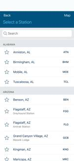
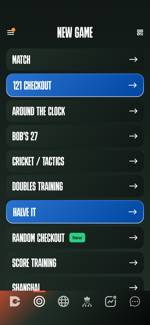
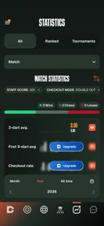
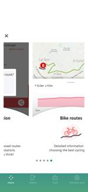

| Screen | Nodes | Web elements | DOM ms | Fail | AI / review | |
|---|---|---|---|---|---|---|
| Italo 6.1.0 01-home | 123 | 36 | 55 | 19 | 37 | |
| Italo 6.1.0 02-notifications | 76 | 6 | 11 | 3 | 4 | |
| Italo 6.1.0 03-departure-station | 70 | 10 | 14 | 5 | 8 | |
| Italo 6.1.0 04-arrival-station | 70 | 10 | 14 | 5 | 8 | |
| Italo 6.1.0 05-retrieve-ticket | 69 | 15 | 20 | 8 | 18 | |
| Italo 6.1.0 06-leave-now | 69 | 15 | 19 | 8 | 18 | |
| Italo 6.1.0 07-learn-more-about-tra | 56 | 15 | 17 | 6 | 13 | |
| Italo 6.1.0 08-purchase-a-travel-pa | 57 | 16 | 19 | 14 | 12 | |
| Italo 6.1.0 09-book-with-travel-pac | 74 | 14 | 17 | 7 | 16 | |
| Italo 6.1.0 10-new-connections | 89 | 27 | 26 | 22 | 42 | |
| Italo 6.1.0 11-loyalty-program | 91 | 28 | 29 | 8 | 42 | |
| Italo 6.1.0 12-travel-with-italo | 82 | 19 | 28 | 5 | 21 | |
| Italo 6.1.0 13-partnership | 64 | 10 | 11 | 5 | 9 | |
| Italo 6.1.0 14-italo-go-partners | 81 | 23 | 19 | 6 | 23 | |
| Italo 6.1.0 15-support | 76 | 17 | 23 | 7 | 21 | |
| Italo 6.1.0 16-app-settings | 120 | 34 | 29 | 14 | 33 | |
| Italo 6.1.0 17-italo-live-portal | 77 | 18 | 19 | 5 | 19 | |
| Italo 6.1.0 18-italo-in-real-time | 111 | 36 | 36 | 24 | 41 | |
| Amtrak 6.0.9 01-initial-screen | 40 | 11 | 13 | 4 | 18 | |
| Amtrak 6.0.9 02-home-guest | 63 | 30 | 42 | 16 | 41 | |
| Amtrak 6.0.9 03-my-trips | 73 | 29 | 25 | 10 | 32 | |
| Amtrak 6.0.9 04-book | 79 | 50 | 51 | 26 | 64 | |
 | Amtrak 6.0.9 05-book-departure-station | 147 | 91 | 147 | 1 | 108 |
| Amtrak 6.0.9 06-more-sheet | 74 | 41 | 37 | 1 | 56 | |
| Amtrak 6.0.9 07-more-amtrak-information | 69 | 29 | 28 | 6 | 32 | |
| Amtrak 6.0.9 08-more-buy-multi-ride-ticket | 57 | 32 | 51 | 11 | 36 | |
| Amtrak 6.0.9 09-more-ridereserve | 52 | 15 | 16 | 10 | 21 | |
| Amtrak 6.0.9 10-more-contact-amtrak | 60 | 27 | 25 | 4 | 30 | |
 | Amtrak 6.0.9 11-more-privacy-policy | 106 | 52 | 55 | 2 | 78 |
| Amtrak 6.0.9 12-more-settings | 100 | 40 | 33 | 3 | 50 | |
 | Amtrak 6.0.9 13-book-arrival-station | 148 | 91 | 148 | 1 | 108 |
 | Amtrak 6.0.9 14-book-date | 84 | 50 | 57 | 26 | 64 |
 | Amtrak 6.0.9 15-more-passengers-with-a-disability | 117 | 41 | 55 | 1 | 56 |
| DartCounter 9.6.2 01-language-dialog | 104 | 59 | 34 | 1 | 64 | |
| DartCounter 9.6.2 02-login | 56 | 31 | 15 | 8 | 44 | |
| DartCounter 9.6.2 03-terms-dialog | 71 | 40 | 24 | 3 | 50 | |
| DartCounter 9.6.2 04-dashboard | 87 | 41 | 28 | 32 | 35 | |
 | DartCounter 9.6.2 05-play-local | 66 | 35 | 24 | 12 | 36 |
| DartCounter 9.6.2 06-play-online | 85 | 50 | 28 | 35 | 66 | |
| DartCounter 9.6.2 07-play-ranked | 119 | 52 | 50 | 13 | 64 | |
| DartCounter 9.6.2 08-online-local-tournament | 57 | 26 | 19 | 21 | 18 | |
 | DartCounter 9.6.2 09-statistics | 212 | 78 | 58 | 40 | 95 |
 | DartCounter 9.6.2 10-mastercaller | 100 | 48 | 35 | 21 | 38 |
| T-mobilitat 1.21.0 01-home | 78 | 0 | — | 0 | 0 | |
| T-mobilitat 1.21.0 02-plan-journey-map | 136 | 4 | 86 | 0 | 0 | |
| T-mobilitat 1.21.0 03-plan-journey-departures | 84 | 5 | 4 | 0 | 0 | |
 | T-mobilitat 1.21.0 04-plan-journey-bike-routes | 83 | 4 | 7 | 0 | 0 |
| T-mobilitat 1.21.0 05-faqs | 59 | 0 | — | 0 | 0 | |
| T-mobilitat 1.21.0 06-mobile | 60 | 0 | — | 0 | 0 | |
| T-mobilitat 1.21.0 07-card | 156 | 0 | — | 0 | 0 |